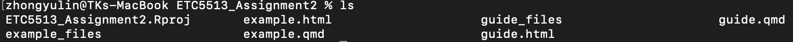
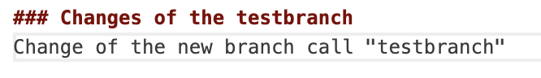
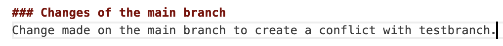
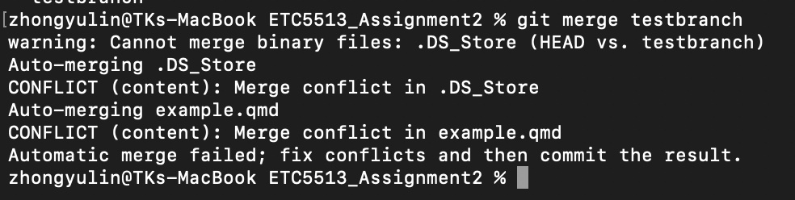
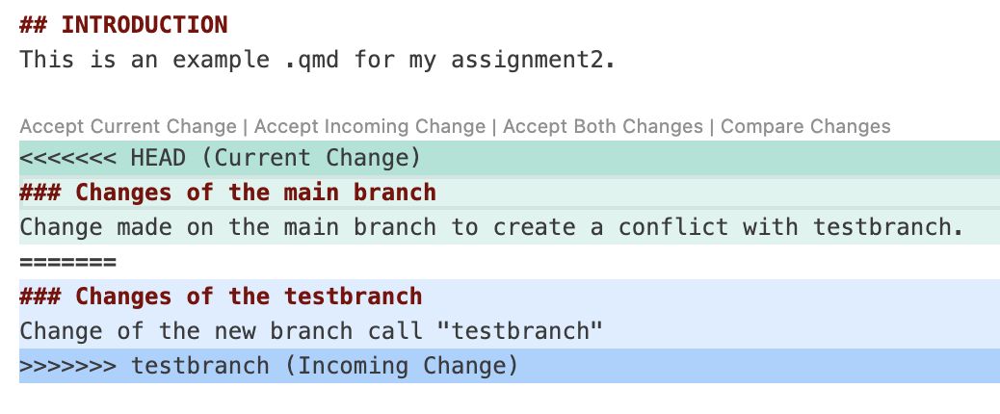
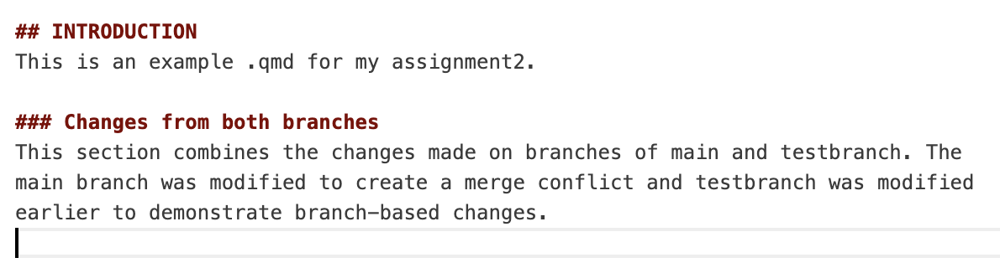
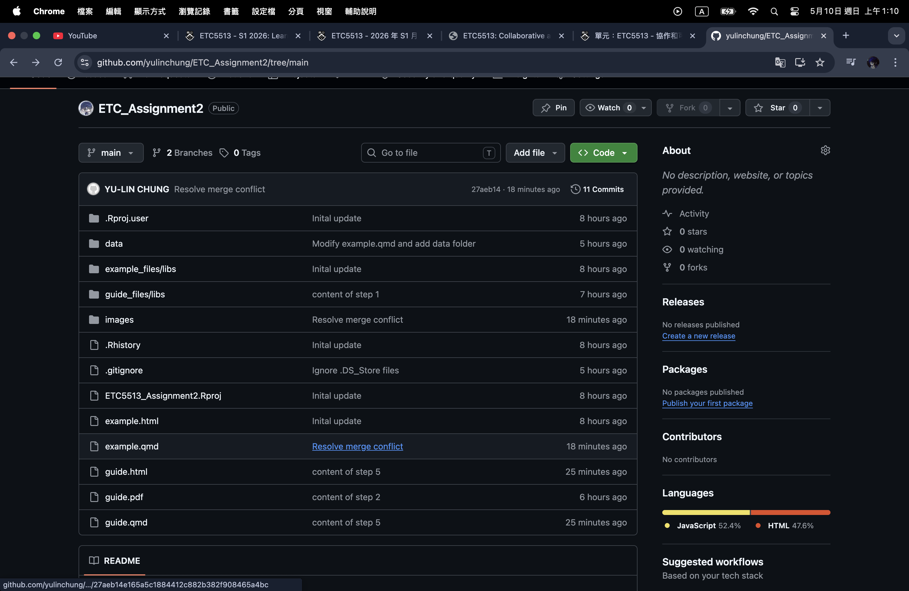
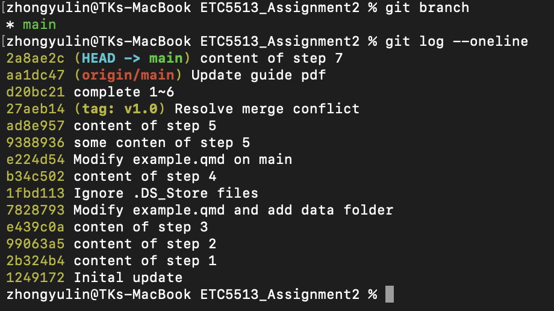

---
title: "GitHub reproducible workbook"
author: "YU-LIN CHUNG, 35480351"
format:
html:
toc: true
theme: solar
---GitHub reproducible workbook
INTRODUCTION
This is a reproducible workbook that demonstrates the knowledge of Git and GitHub usage. To help you understand who to use these tools efficiently for version control and collaboration, we will follow the instrctions to complete some tasks.
WORKING GUIDELINE
1. Creating a new RStudio Project and Quarto file.
First, you need to create a new RStudio Project called “ETC5513_Assignment2” and use the following command to create a simple qmd file called example.qmd.
- The command
cdis used to move into the project folder.
cd ETC5513_Assignment2- The command
touch filename.qmdcreate a new empty Quarto file.
touch example.qmd- To make it be knitted into a HTML file, you need to write the YAML format of html and render it.
- The command
lswill list all of the file in “ETC5513_Assignment2”. It can be seen that we successfully knitted the file into HTML when there is a file call “example.html”

2. Initialising the folder as a Git repository
After creating and rendering example.qmd, we can use the following command to initialise the project folder as a Git repository.
- The command
git initcreate a new local Git repository in the project folder.
git init- The command
git addwill add the change into the staging area. The dot means the current directory. Therefore,git add .stages all changes in the current project folder.
git add .- The command
git commitcreate the first commit in the repository. We usually add the message with-mto remind us for our implement.
git commit -m "Inital update"3. Creating the new branch and add the changes.
Now we need to do two things: First, create a new branch called testbranch. Second, modify the file example.qmd and add the changes to both the local and remote repositories.
- To make sure we are in the main branch. The command
git branchcan ensure where you are if you see an asterisk symbol in front of the branch name.
git branch- The command
git switchwill create a new branch and switch you to this branch.
git switch -c testbranch- After modifying example.qmd, we can use
git statusto check the status of it.
git status- Following the above steps, we need to add the modified file to the staging area with the command
git addand commit the change to the local repository with the commandgit commitand write the message for it.
git add example.qmd
git commit -m "Modify example.qmd on testbranch"- Finally, we need to push the new branch and its commit to the remote GitHub repository by using command
git push. However, because it is the first time to push the new branch to GitHub, we need to set up upstream with-u
git push -u origin testbranch4. Adding data and amend the previous commit
Next, we need to create a folder called data, and add the data from Assignment 1 to that folder.
- We need to make sure we are working on testbranch. The command
git branchwill show where you are with the asterisk symbol in fornt of the branch name.
git branch- The command
mkdircreate a new folder.
mkdir data- The command
cpis used to copy the data in to the folder “data” .
cp "/Users/zhongyulin/assignment-1-creating-reproducible-reports-yulinchung/data/35480351_Yu-Lin Chung.csv" data/- The command
cdis used to move into specific folder and we can uselsto check that the file had been copied successfully.
cd data
lsAfter that, we will learn how to amend the previous commit to include the data folder and push this amended commit to the remote.
- Instead of creating a new commit, we need to amend the previous commit. The command
git commit --amendmodifies the most recent commit. The option-mallows us to write a new commit message.
git commit --amend -m "Modify example.qmd and add data folder"- Finally, we need to push it to the remote GitHub repository by using command
git push. However, because we amended a commit that had already been pushed, the commit history changed. Therefore, we need to usegit push -frather than a normalgit pushto force GitHub to update the remote branch.
git push -f origin testbranch5. Creating merge conflict
- First, we need to switch back to the
mainbranch.
git switch main- To create the conflict, we should types some similar content in main branch as the same position in testbranch.


- After modifying the file, we add and commit the change, and try to push the change to GitHub.
git add example.qmd
git commit -m "Modify example.qmd on main"
git push6. Deal with merge conflict
- To merge
testbranchintomain, we use the commandgit merge
git merge testbranch- After completing the steps above, we will find that the system reminds us there is a conflict.

- We need to fix the merge conflict.


- After resolving the conflict, we can use
git statusto check the current status. This command shows whether all conflicts have been fixed and whether the files are ready to commit.
git status- After the conflict was fixed, we used
git addto add the changes into the staging area. Then, we commit the resolved merge conflict. This commit records the final version after merging testbranch into main. Finally, we push the merge commit to the remote GitHub repository.
git add example.qmd
git commit -m "Resolve merge conflict"
git push- After pushing, we can refresh the GitHub repository page and check the
mainbranch. The latest commit message is “Resolve merge conflict”, which shows that the merge result has been pushed to GitHub.

7. Annotated tag
The next step, we need to tag the commit of sloving merge conflict v1.0 on main using an annotated tag.
- Before creating the tag, we can use
git log --onelineto check the commit history and find the commit that we want to tag.
git log --oneline- The command
git tag -ameans to create an annotated tag and the option-mallows us to write a message for the tag. Because I made another commit after resolving the merge conflict, we need to type the commit hash to make sure we add the annotated tag on the write place.
git tag -a v1.0 27aeb14 -m "Version 1.0"- To check more details about the tag, we can use
git show. This command shows the tag message and the commit that the tag points to.
git show v1.0- Finally, we need to push the tag to the remote GitHub repository.
git push origin v1.08. Deleting branch locally and on the remote
In this step, we need to delete the branch called testbranch both locally and on the remote GitHub repository.
- First, we need to make sure we are not working on
testbranch. We can usegit branchto check the current branch with the asterisk symbol in front of it. The commandgit switchmove us into the branch we want.
git branch
git switch main- we can delete the local branch by using
git branch -d.
git branch -d testbranch- The command
git push origin --deletedeletes the branch from the remote repository.
git push origin --delete testbranch9. Show the commit log in condensed form in the terminal.
In this step, we need to show the commit history in a condensed form in the terminal. A condensed commit log is easier to read because it shows each commit on one line.
- The command
git log --onelineshows the commit history in a shorter format.
git log --oneline
10. Add a simple plot and undo the commit without losing local changes
In this step, we need to create a new section in example.qmd that includes an easy plot. In this part, we commit the change and use the command line interface to undo the commit without losing the local changes.
- After saving example.qmd, we add the modified file to the staging area and commit the change.
git add example.qmd
git commit -m "Add simple plot"- We can use git log –oneline to check that the commit Add simple plot has been created.
git log --oneline- To undo the latest commit without losing the local changes, we use
git resetto move back to a previous commit. The option--softremoves the most recent commit, but keeps the changes in the staging area, andHEAD~1means one commit before the current commit.
git reset --soft HEAD~1- Finally, we use git status to check the result.
git status